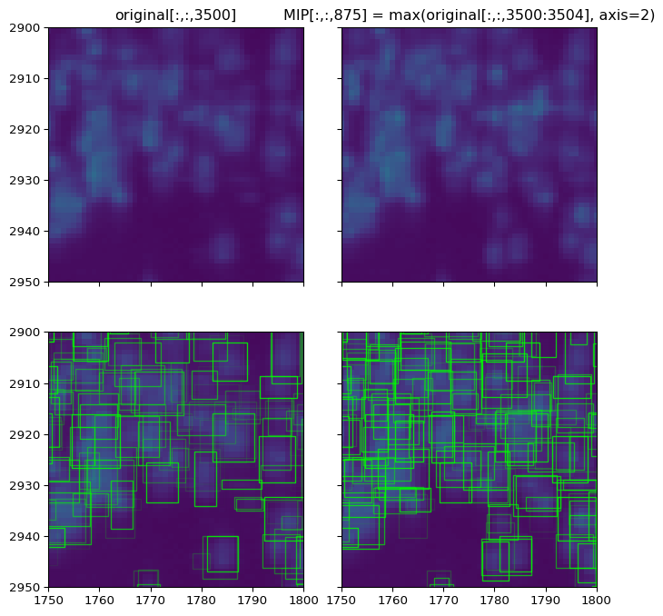
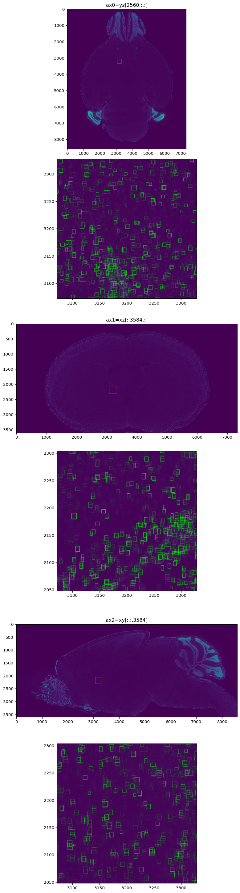

[1]:
import torch
import matplotlib.pyplot as plt
import os
import time
import numpy as np
import random
from matplotlib.patches import Rectangle
import tifffile
import h5py
from torch.utils.data import DataLoader
import imageio.v2 as imageio
from scipy.ndimage import gaussian_filter
import importlib as imp
import sys
sys.path.append('/home/abenneck/Desktop/yolo_tiles/docs/scripts')
import yolo_tiles
imp.reload(yolo_tiles)
from yolo_tiles import img_to_tiles, apply_model_to_tiles, load_test_image, preprocess, tileDataset, remove_bbox_in_overlap
import yolo_help
imp.reload(yolo_help)
from yolo_help import bbox_to_rectangles, imshow, convert_data, Net, get_best_bounding_box_per_cell
import yolo_post_help
imp.reload(yolo_post_help)
from yolo_post_help import remove_low_conf_bboxes, postprocess, bb_to_rec
(1) Downsample each dataset along the ‘slice’ dimension¶
[3]:
# curr_ax, idx_start = 0, 3600
# curr_ax, idx_start = 1, 8587
curr_ax, idx_start = 2, 7321
indir = f'/nafs/shattuck/RodentToolsData/ZW-DT-1-P56-1/yolo3D_outputs_v01/ax{curr_ax}'
outdir = f'/nafs/shattuck/RodentToolsData/ZW-DT-1-P56-1/yolo3D_outputs_v01/ax{curr_ax}_down'
conf_idx = 4
n_files = len(os.listdir(indir))
ds_count = 0
recon_down = []
time_start = time.time()
for idx, fname in enumerate(sorted(os.listdir(indir))):
if idx < idx_start:
continue
# Increment count for current number of slices in the "to-be-downsampled" stack
ds_count += 1
# Load slice data
data = np.load(os.path.join(indir, fname))
# Append slice to the stack before downsampling
recon_down.append(data)
# Downsample every 8 slices
if ds_count == 4:
recon_down = np.stack(recon_down)
inds = np.argmax(recon_down[..., conf_idx], axis = 0)
recon_down_out = np.take_along_axis(recon_down, inds[None, :, :, None], axis=0)
recon_down_out = recon_down_out[0]
# Save downsampled output
out_fname = fname[:30] + f'_ax{curr_ax}_{idx-3:05d}:{idx:05d}.npy'
np.save(os.path.join(outdir, out_fname), recon_down_out)
print(f'Downsampled slices {idx-3}-{idx}/{n_files} in {time.time()-time_start:.02f}s and saved outputs at {out_fname}')
# break
# Reset counts + empty the primary data structure
time_start = time.time()
recon_down = []
ds_count = 0
Downsampled slices 6768-6771/7321 in 4.39s and saved outputs at Ex_488_Em_525_stitched_full_sa_ax2_06768:06771.npy
Downsampled slices 6772-6775/7321 in 4.06s and saved outputs at Ex_488_Em_525_stitched_full_sa_ax2_06772:06775.npy
Downsampled slices 6776-6779/7321 in 4.27s and saved outputs at Ex_488_Em_525_stitched_full_sa_ax2_06776:06779.npy
Downsampled slices 6780-6783/7321 in 4.02s and saved outputs at Ex_488_Em_525_stitched_full_sa_ax2_06780:06783.npy
Downsampled slices 6784-6787/7321 in 3.85s and saved outputs at Ex_488_Em_525_stitched_full_sa_ax2_06784:06787.npy
Downsampled slices 6788-6791/7321 in 4.04s and saved outputs at Ex_488_Em_525_stitched_full_sa_ax2_06788:06791.npy
Downsampled slices 6792-6795/7321 in 3.79s and saved outputs at Ex_488_Em_525_stitched_full_sa_ax2_06792:06795.npy
Downsampled slices 6796-6799/7321 in 4.13s and saved outputs at Ex_488_Em_525_stitched_full_sa_ax2_06796:06799.npy
Downsampled slices 6800-6803/7321 in 4.27s and saved outputs at Ex_488_Em_525_stitched_full_sa_ax2_06800:06803.npy
Downsampled slices 6804-6807/7321 in 5.02s and saved outputs at Ex_488_Em_525_stitched_full_sa_ax2_06804:06807.npy
Downsampled slices 6808-6811/7321 in 3.89s and saved outputs at Ex_488_Em_525_stitched_full_sa_ax2_06808:06811.npy
Downsampled slices 6812-6815/7321 in 4.23s and saved outputs at Ex_488_Em_525_stitched_full_sa_ax2_06812:06815.npy
Downsampled slices 6816-6819/7321 in 3.78s and saved outputs at Ex_488_Em_525_stitched_full_sa_ax2_06816:06819.npy
Downsampled slices 6820-6823/7321 in 4.04s and saved outputs at Ex_488_Em_525_stitched_full_sa_ax2_06820:06823.npy
Downsampled slices 6824-6827/7321 in 4.16s and saved outputs at Ex_488_Em_525_stitched_full_sa_ax2_06824:06827.npy
Downsampled slices 6828-6831/7321 in 4.01s and saved outputs at Ex_488_Em_525_stitched_full_sa_ax2_06828:06831.npy
Downsampled slices 6832-6835/7321 in 3.95s and saved outputs at Ex_488_Em_525_stitched_full_sa_ax2_06832:06835.npy
Downsampled slices 6836-6839/7321 in 3.76s and saved outputs at Ex_488_Em_525_stitched_full_sa_ax2_06836:06839.npy
Downsampled slices 6840-6843/7321 in 3.84s and saved outputs at Ex_488_Em_525_stitched_full_sa_ax2_06840:06843.npy
Downsampled slices 6844-6847/7321 in 4.21s and saved outputs at Ex_488_Em_525_stitched_full_sa_ax2_06844:06847.npy
Downsampled slices 6848-6851/7321 in 4.60s and saved outputs at Ex_488_Em_525_stitched_full_sa_ax2_06848:06851.npy
Downsampled slices 6852-6855/7321 in 3.95s and saved outputs at Ex_488_Em_525_stitched_full_sa_ax2_06852:06855.npy
Downsampled slices 6856-6859/7321 in 4.15s and saved outputs at Ex_488_Em_525_stitched_full_sa_ax2_06856:06859.npy
Downsampled slices 6860-6863/7321 in 5.12s and saved outputs at Ex_488_Em_525_stitched_full_sa_ax2_06860:06863.npy
Downsampled slices 6864-6867/7321 in 5.11s and saved outputs at Ex_488_Em_525_stitched_full_sa_ax2_06864:06867.npy
Downsampled slices 6868-6871/7321 in 5.15s and saved outputs at Ex_488_Em_525_stitched_full_sa_ax2_06868:06871.npy
Downsampled slices 6872-6875/7321 in 4.60s and saved outputs at Ex_488_Em_525_stitched_full_sa_ax2_06872:06875.npy
Downsampled slices 6876-6879/7321 in 4.50s and saved outputs at Ex_488_Em_525_stitched_full_sa_ax2_06876:06879.npy
Downsampled slices 6880-6883/7321 in 4.31s and saved outputs at Ex_488_Em_525_stitched_full_sa_ax2_06880:06883.npy
Downsampled slices 6884-6887/7321 in 4.44s and saved outputs at Ex_488_Em_525_stitched_full_sa_ax2_06884:06887.npy
Downsampled slices 6888-6891/7321 in 5.78s and saved outputs at Ex_488_Em_525_stitched_full_sa_ax2_06888:06891.npy
Downsampled slices 6892-6895/7321 in 4.74s and saved outputs at Ex_488_Em_525_stitched_full_sa_ax2_06892:06895.npy
Downsampled slices 6896-6899/7321 in 4.33s and saved outputs at Ex_488_Em_525_stitched_full_sa_ax2_06896:06899.npy
Downsampled slices 6900-6903/7321 in 3.85s and saved outputs at Ex_488_Em_525_stitched_full_sa_ax2_06900:06903.npy
Downsampled slices 6904-6907/7321 in 4.38s and saved outputs at Ex_488_Em_525_stitched_full_sa_ax2_06904:06907.npy
Downsampled slices 6908-6911/7321 in 4.39s and saved outputs at Ex_488_Em_525_stitched_full_sa_ax2_06908:06911.npy
Downsampled slices 6912-6915/7321 in 4.04s and saved outputs at Ex_488_Em_525_stitched_full_sa_ax2_06912:06915.npy
Downsampled slices 6916-6919/7321 in 4.45s and saved outputs at Ex_488_Em_525_stitched_full_sa_ax2_06916:06919.npy
Downsampled slices 6920-6923/7321 in 5.39s and saved outputs at Ex_488_Em_525_stitched_full_sa_ax2_06920:06923.npy
Downsampled slices 6924-6927/7321 in 5.26s and saved outputs at Ex_488_Em_525_stitched_full_sa_ax2_06924:06927.npy
Downsampled slices 6928-6931/7321 in 4.51s and saved outputs at Ex_488_Em_525_stitched_full_sa_ax2_06928:06931.npy
Downsampled slices 6932-6935/7321 in 3.96s and saved outputs at Ex_488_Em_525_stitched_full_sa_ax2_06932:06935.npy
Downsampled slices 6936-6939/7321 in 5.20s and saved outputs at Ex_488_Em_525_stitched_full_sa_ax2_06936:06939.npy
Downsampled slices 6940-6943/7321 in 4.23s and saved outputs at Ex_488_Em_525_stitched_full_sa_ax2_06940:06943.npy
Downsampled slices 6944-6947/7321 in 4.37s and saved outputs at Ex_488_Em_525_stitched_full_sa_ax2_06944:06947.npy
Downsampled slices 6948-6951/7321 in 3.72s and saved outputs at Ex_488_Em_525_stitched_full_sa_ax2_06948:06951.npy
Downsampled slices 6952-6955/7321 in 4.62s and saved outputs at Ex_488_Em_525_stitched_full_sa_ax2_06952:06955.npy
Downsampled slices 6956-6959/7321 in 4.27s and saved outputs at Ex_488_Em_525_stitched_full_sa_ax2_06956:06959.npy
Downsampled slices 6960-6963/7321 in 4.60s and saved outputs at Ex_488_Em_525_stitched_full_sa_ax2_06960:06963.npy
Downsampled slices 6964-6967/7321 in 4.23s and saved outputs at Ex_488_Em_525_stitched_full_sa_ax2_06964:06967.npy
Downsampled slices 6968-6971/7321 in 5.27s and saved outputs at Ex_488_Em_525_stitched_full_sa_ax2_06968:06971.npy
Downsampled slices 6972-6975/7321 in 5.26s and saved outputs at Ex_488_Em_525_stitched_full_sa_ax2_06972:06975.npy
Downsampled slices 6976-6979/7321 in 5.32s and saved outputs at Ex_488_Em_525_stitched_full_sa_ax2_06976:06979.npy
Downsampled slices 6980-6983/7321 in 6.65s and saved outputs at Ex_488_Em_525_stitched_full_sa_ax2_06980:06983.npy
Downsampled slices 6984-6987/7321 in 5.68s and saved outputs at Ex_488_Em_525_stitched_full_sa_ax2_06984:06987.npy
Downsampled slices 6988-6991/7321 in 4.68s and saved outputs at Ex_488_Em_525_stitched_full_sa_ax2_06988:06991.npy
Downsampled slices 6992-6995/7321 in 5.92s and saved outputs at Ex_488_Em_525_stitched_full_sa_ax2_06992:06995.npy
Downsampled slices 6996-6999/7321 in 5.40s and saved outputs at Ex_488_Em_525_stitched_full_sa_ax2_06996:06999.npy
Downsampled slices 7000-7003/7321 in 3.42s and saved outputs at Ex_488_Em_525_stitched_full_sa_ax2_07000:07003.npy
Downsampled slices 7004-7007/7321 in 3.25s and saved outputs at Ex_488_Em_525_stitched_full_sa_ax2_07004:07007.npy
Downsampled slices 7008-7011/7321 in 0.88s and saved outputs at Ex_488_Em_525_stitched_full_sa_ax2_07008:07011.npy
Downsampled slices 7012-7015/7321 in 0.87s and saved outputs at Ex_488_Em_525_stitched_full_sa_ax2_07012:07015.npy
Downsampled slices 7016-7019/7321 in 0.94s and saved outputs at Ex_488_Em_525_stitched_full_sa_ax2_07016:07019.npy
Downsampled slices 7020-7023/7321 in 0.95s and saved outputs at Ex_488_Em_525_stitched_full_sa_ax2_07020:07023.npy
Downsampled slices 7024-7027/7321 in 0.92s and saved outputs at Ex_488_Em_525_stitched_full_sa_ax2_07024:07027.npy
Downsampled slices 7028-7031/7321 in 0.93s and saved outputs at Ex_488_Em_525_stitched_full_sa_ax2_07028:07031.npy
Downsampled slices 7032-7035/7321 in 0.90s and saved outputs at Ex_488_Em_525_stitched_full_sa_ax2_07032:07035.npy
Downsampled slices 7036-7039/7321 in 0.89s and saved outputs at Ex_488_Em_525_stitched_full_sa_ax2_07036:07039.npy
Downsampled slices 7040-7043/7321 in 0.93s and saved outputs at Ex_488_Em_525_stitched_full_sa_ax2_07040:07043.npy
Downsampled slices 7044-7047/7321 in 0.90s and saved outputs at Ex_488_Em_525_stitched_full_sa_ax2_07044:07047.npy
Downsampled slices 7048-7051/7321 in 0.94s and saved outputs at Ex_488_Em_525_stitched_full_sa_ax2_07048:07051.npy
Downsampled slices 7052-7055/7321 in 0.92s and saved outputs at Ex_488_Em_525_stitched_full_sa_ax2_07052:07055.npy
Downsampled slices 7056-7059/7321 in 0.94s and saved outputs at Ex_488_Em_525_stitched_full_sa_ax2_07056:07059.npy
Downsampled slices 7060-7063/7321 in 0.97s and saved outputs at Ex_488_Em_525_stitched_full_sa_ax2_07060:07063.npy
Downsampled slices 7064-7067/7321 in 0.91s and saved outputs at Ex_488_Em_525_stitched_full_sa_ax2_07064:07067.npy
Downsampled slices 7068-7071/7321 in 0.95s and saved outputs at Ex_488_Em_525_stitched_full_sa_ax2_07068:07071.npy
Downsampled slices 7072-7075/7321 in 0.89s and saved outputs at Ex_488_Em_525_stitched_full_sa_ax2_07072:07075.npy
Downsampled slices 7076-7079/7321 in 0.96s and saved outputs at Ex_488_Em_525_stitched_full_sa_ax2_07076:07079.npy
Downsampled slices 7080-7083/7321 in 0.91s and saved outputs at Ex_488_Em_525_stitched_full_sa_ax2_07080:07083.npy
Downsampled slices 7084-7087/7321 in 0.93s and saved outputs at Ex_488_Em_525_stitched_full_sa_ax2_07084:07087.npy
Downsampled slices 7088-7091/7321 in 0.95s and saved outputs at Ex_488_Em_525_stitched_full_sa_ax2_07088:07091.npy
Downsampled slices 7092-7095/7321 in 0.91s and saved outputs at Ex_488_Em_525_stitched_full_sa_ax2_07092:07095.npy
Downsampled slices 7096-7099/7321 in 0.89s and saved outputs at Ex_488_Em_525_stitched_full_sa_ax2_07096:07099.npy
Downsampled slices 7100-7103/7321 in 0.92s and saved outputs at Ex_488_Em_525_stitched_full_sa_ax2_07100:07103.npy
Downsampled slices 7104-7107/7321 in 0.90s and saved outputs at Ex_488_Em_525_stitched_full_sa_ax2_07104:07107.npy
Downsampled slices 7108-7111/7321 in 1.01s and saved outputs at Ex_488_Em_525_stitched_full_sa_ax2_07108:07111.npy
Downsampled slices 7112-7115/7321 in 0.92s and saved outputs at Ex_488_Em_525_stitched_full_sa_ax2_07112:07115.npy
Downsampled slices 7116-7119/7321 in 0.89s and saved outputs at Ex_488_Em_525_stitched_full_sa_ax2_07116:07119.npy
Downsampled slices 7120-7123/7321 in 0.91s and saved outputs at Ex_488_Em_525_stitched_full_sa_ax2_07120:07123.npy
Downsampled slices 7124-7127/7321 in 0.91s and saved outputs at Ex_488_Em_525_stitched_full_sa_ax2_07124:07127.npy
Downsampled slices 7128-7131/7321 in 0.95s and saved outputs at Ex_488_Em_525_stitched_full_sa_ax2_07128:07131.npy
Downsampled slices 7132-7135/7321 in 0.89s and saved outputs at Ex_488_Em_525_stitched_full_sa_ax2_07132:07135.npy
Downsampled slices 7136-7139/7321 in 0.94s and saved outputs at Ex_488_Em_525_stitched_full_sa_ax2_07136:07139.npy
Downsampled slices 7140-7143/7321 in 0.91s and saved outputs at Ex_488_Em_525_stitched_full_sa_ax2_07140:07143.npy
Downsampled slices 7144-7147/7321 in 0.95s and saved outputs at Ex_488_Em_525_stitched_full_sa_ax2_07144:07147.npy
Downsampled slices 7148-7151/7321 in 1.02s and saved outputs at Ex_488_Em_525_stitched_full_sa_ax2_07148:07151.npy
Downsampled slices 7152-7155/7321 in 1.06s and saved outputs at Ex_488_Em_525_stitched_full_sa_ax2_07152:07155.npy
Downsampled slices 7156-7159/7321 in 1.01s and saved outputs at Ex_488_Em_525_stitched_full_sa_ax2_07156:07159.npy
Downsampled slices 7160-7163/7321 in 0.99s and saved outputs at Ex_488_Em_525_stitched_full_sa_ax2_07160:07163.npy
Downsampled slices 7164-7167/7321 in 0.92s and saved outputs at Ex_488_Em_525_stitched_full_sa_ax2_07164:07167.npy
Downsampled slices 7168-7171/7321 in 0.92s and saved outputs at Ex_488_Em_525_stitched_full_sa_ax2_07168:07171.npy
Downsampled slices 7172-7175/7321 in 1.18s and saved outputs at Ex_488_Em_525_stitched_full_sa_ax2_07172:07175.npy
Downsampled slices 7176-7179/7321 in 0.93s and saved outputs at Ex_488_Em_525_stitched_full_sa_ax2_07176:07179.npy
Downsampled slices 7180-7183/7321 in 1.04s and saved outputs at Ex_488_Em_525_stitched_full_sa_ax2_07180:07183.npy
Downsampled slices 7184-7187/7321 in 0.87s and saved outputs at Ex_488_Em_525_stitched_full_sa_ax2_07184:07187.npy
Downsampled slices 7188-7191/7321 in 0.88s and saved outputs at Ex_488_Em_525_stitched_full_sa_ax2_07188:07191.npy
Downsampled slices 7192-7195/7321 in 0.89s and saved outputs at Ex_488_Em_525_stitched_full_sa_ax2_07192:07195.npy
Downsampled slices 7196-7199/7321 in 0.91s and saved outputs at Ex_488_Em_525_stitched_full_sa_ax2_07196:07199.npy
Downsampled slices 7200-7203/7321 in 0.92s and saved outputs at Ex_488_Em_525_stitched_full_sa_ax2_07200:07203.npy
Downsampled slices 7204-7207/7321 in 0.94s and saved outputs at Ex_488_Em_525_stitched_full_sa_ax2_07204:07207.npy
Downsampled slices 7208-7211/7321 in 0.92s and saved outputs at Ex_488_Em_525_stitched_full_sa_ax2_07208:07211.npy
Downsampled slices 7212-7215/7321 in 0.95s and saved outputs at Ex_488_Em_525_stitched_full_sa_ax2_07212:07215.npy
Downsampled slices 7216-7219/7321 in 0.93s and saved outputs at Ex_488_Em_525_stitched_full_sa_ax2_07216:07219.npy
Downsampled slices 7220-7223/7321 in 0.93s and saved outputs at Ex_488_Em_525_stitched_full_sa_ax2_07220:07223.npy
Downsampled slices 7224-7227/7321 in 0.97s and saved outputs at Ex_488_Em_525_stitched_full_sa_ax2_07224:07227.npy
Downsampled slices 7228-7231/7321 in 0.90s and saved outputs at Ex_488_Em_525_stitched_full_sa_ax2_07228:07231.npy
Downsampled slices 7232-7235/7321 in 0.96s and saved outputs at Ex_488_Em_525_stitched_full_sa_ax2_07232:07235.npy
Downsampled slices 7236-7239/7321 in 0.94s and saved outputs at Ex_488_Em_525_stitched_full_sa_ax2_07236:07239.npy
Downsampled slices 7240-7243/7321 in 0.89s and saved outputs at Ex_488_Em_525_stitched_full_sa_ax2_07240:07243.npy
Downsampled slices 7244-7247/7321 in 0.94s and saved outputs at Ex_488_Em_525_stitched_full_sa_ax2_07244:07247.npy
Downsampled slices 7248-7251/7321 in 0.89s and saved outputs at Ex_488_Em_525_stitched_full_sa_ax2_07248:07251.npy
Downsampled slices 7252-7255/7321 in 0.90s and saved outputs at Ex_488_Em_525_stitched_full_sa_ax2_07252:07255.npy
Downsampled slices 7256-7259/7321 in 0.93s and saved outputs at Ex_488_Em_525_stitched_full_sa_ax2_07256:07259.npy
Downsampled slices 7260-7263/7321 in 0.89s and saved outputs at Ex_488_Em_525_stitched_full_sa_ax2_07260:07263.npy
Downsampled slices 7264-7267/7321 in 0.92s and saved outputs at Ex_488_Em_525_stitched_full_sa_ax2_07264:07267.npy
Downsampled slices 7268-7271/7321 in 0.93s and saved outputs at Ex_488_Em_525_stitched_full_sa_ax2_07268:07271.npy
Downsampled slices 7272-7275/7321 in 0.93s and saved outputs at Ex_488_Em_525_stitched_full_sa_ax2_07272:07275.npy
Downsampled slices 7276-7279/7321 in 0.95s and saved outputs at Ex_488_Em_525_stitched_full_sa_ax2_07276:07279.npy
Downsampled slices 7280-7283/7321 in 0.91s and saved outputs at Ex_488_Em_525_stitched_full_sa_ax2_07280:07283.npy
Downsampled slices 7284-7287/7321 in 0.99s and saved outputs at Ex_488_Em_525_stitched_full_sa_ax2_07284:07287.npy
Downsampled slices 7288-7291/7321 in 0.91s and saved outputs at Ex_488_Em_525_stitched_full_sa_ax2_07288:07291.npy
Downsampled slices 7292-7295/7321 in 0.92s and saved outputs at Ex_488_Em_525_stitched_full_sa_ax2_07292:07295.npy
Downsampled slices 7296-7299/7321 in 0.91s and saved outputs at Ex_488_Em_525_stitched_full_sa_ax2_07296:07299.npy
Downsampled slices 7300-7303/7321 in 0.89s and saved outputs at Ex_488_Em_525_stitched_full_sa_ax2_07300:07303.npy
Downsampled slices 7304-7307/7321 in 0.93s and saved outputs at Ex_488_Em_525_stitched_full_sa_ax2_07304:07307.npy
Downsampled slices 7308-7311/7321 in 0.92s and saved outputs at Ex_488_Em_525_stitched_full_sa_ax2_07308:07311.npy
Downsampled slices 7312-7315/7321 in 0.97s and saved outputs at Ex_488_Em_525_stitched_full_sa_ax2_07312:07315.npy
Downsampled slices 7316-7319/7321 in 0.94s and saved outputs at Ex_488_Em_525_stitched_full_sa_ax2_07316:07319.npy
[2]:
# Downsample 3D image along one axis. Useful for overlaying bbox outputs on MIPs
def vol_to_mip(vol, ax_idx, ds_factor = 8, slice_idx = -1):
"""
Convert a 3D image volume (vol) into a stack of 2D MIPs along an axis (ax_idx).
This is useful for visualizing outputs from the YOLO_3D pipeline.
Parameters:
===========
vol : array of shape N x M x K
The image volume to be 'downsampled'
ax_idx : int
The axis along which MIPs should be generated
ds_factor : int
The number of slices to use in each MIP
slice_idx : int
Default - -1; If -1, return the downsampled 3d volume of 2d slices along 'ax_idx'.
Else, Return the MIP of [slice_idx:slice_idx+ds_factor] along 'ax_idx'.
Returns:
========
vol_mip : array
A stack of MIPs along the 'ax_idx' axis
"""
if slice_idx == -1:
vol_mip = []
vol_dim = vol.shape[ax_idx]
for i in np.arange(int(vol_dim/ds_factor)):
if ax_idx == 0:
vol_slice_stack = vol[(i*ds_factor):((i+1)*ds_factor), :, :]
elif ax_idx == 1:
vol_slice_stack = vol[:, (i*ds_factor):((i+1)*ds_factor), :]
elif ax_idx == 2:
vol_slice_stack = vol[:, :, (i*ds_factor):((i+1)*ds_factor)]
else:
raise Exception(f'vol only has {len(vol.shape)} axes, but ax_idx = {ax_idx} was passed')
vol_slice_max = np.max(vol_slice_stack, axis=ax_idx)
vol_mip.append(vol_slice_max)
vol_mip = np.stack(vol_mip, axis=ax_idx)
return vol_mip
else:
if ax_idx == 0:
vol_slice_stack = vol[(slice_idx):(slice_idx+ds_factor-1), :, :]
elif ax_idx == 1:
vol_slice_stack = vol[:, (slice_idx):(slice_idx+ds_factor-1), :]
elif ax_idx == 2:
vol_slice_stack = vol[:, :, (slice_idx):(slice_idx+ds_factor-1)]
else:
raise Exception(f'vol only has {len(vol.shape)} axes, but ax_idx = {ax_idx} was passed')
vol_slice_max = np.max(vol_slice_stack, axis=ax_idx)
return vol_slice_max
Plot Results¶
[14]:
# Set parameters
ds_factor = 4
curr_ax = 2 # [0,1,2]
orig_slice_idx = 3500 # {0:[0,3600],1:[0,8587],2:[0,7321]}
out_slice_idx = int(orig_slice_idx/ds_factor)
# Load HDF5 3D input image
if curr_ax == 0:
fname = '/nafs/shattuck/RodentToolsData/Stacked/Ex_488_Em_525_stitched_chunk32.h5'
vol = h5py.File(fname)
vol_stack = vol['stack']
img = vol_stack[orig_slice_idx, :, :]
img_title = f'original[{orig_slice_idx},:,:]'
img_mip = vol_to_mip(vol_stack, curr_ax, ds_factor = 4, slice_idx = orig_slice_idx)
img_mip_title = f'MIP[{out_slice_idx},:,:] = max(original[{orig_slice_idx}:{orig_slice_idx+4},:,:], axis={curr_ax})'
slice_fname = f'/nafs/shattuck/RodentToolsData/ZW-DT-1-P56-1/yolo3D_outputs_v01/ax{curr_ax}/Ex_488_Em_525_stitched_chunk32idx_{orig_slice_idx:05d}_:_:.npy'
elif curr_ax == 1:
fname = '/nafs/shattuck/RodentToolsData/Stacked/Ex_488_Em_525_stitched_chunk32.h5'
vol = h5py.File(fname)
vol_stack = vol['stack']
img = vol_stack[:, orig_slice_idx, :]
img_title = f'original[:,{orig_slice_idx},:]'
img_mip = vol_to_mip(vol_stack, curr_ax, ds_factor = 4, slice_idx = orig_slice_idx)
img_mip_title = f'MIP[:,{out_slice_idx},:] = max(original[:,{orig_slice_idx}:{orig_slice_idx+4},:], axis={curr_ax})'
slice_fname = f'/nafs/shattuck/RodentToolsData/ZW-DT-1-P56-1/yolo3D_outputs_v01/ax{curr_ax}/Ex_488_Em_525_stitched_chunk32idx_:_{orig_slice_idx:05d}_:.npy'
else: # curr_ax = 2
fname = '/nafs/shattuck/RodentToolsData/Stacked/Ex_488_Em_525_stitched_full_sag.h5'
vol = h5py.File(fname)
vol_stack = vol['stack']
img = vol_stack[:, :, orig_slice_idx]
img_title = f'original[:,:,{orig_slice_idx}]'
img_mip = vol_to_mip(vol_stack, curr_ax, ds_factor = 4, slice_idx = orig_slice_idx)
img_mip_title = f'MIP[:,:,{out_slice_idx}] = max(original[:,:,{orig_slice_idx}:{orig_slice_idx+4}], axis={curr_ax})'
slice_fname = f'/nafs/shattuck/RodentToolsData/ZW-DT-1-P56-1/yolo3D_outputs_v01/ax{curr_ax}/Ex_488_Em_525_stitched_full_sagidx_:_:_{orig_slice_idx:05d}.npy'
print('Finished loading images')
# Load output files
recon_orig = np.load(slice_fname)
slice_fname_ds = f'/nafs/shattuck/RodentToolsData/ZW-DT-1-P56-1/yolo3D_outputs_v01/ax{curr_ax}_down/Ex_488_Em_525_stitched_full_sa_ax{curr_ax}_{orig_slice_idx:05d}:{orig_slice_idx+3:05d}.npy'
recon_ds = np.load(slice_fname_ds)
print('Finished loading outputs')
# Generate visualization
fig, axs = plt.subplots(2, 2, layout='constrained', sharex=True, sharey=True)
axs[0,0].imshow(img)
axs[0,0].set_title(img_title)
time_start = time.time()
scores = recon_orig[:,:,-4].ravel()
predicted_rectangles = bb_to_rec(recon_orig, fc='none', ec='lime', alpha=scores)
axs[1,0].imshow(img)
axs[1,0].add_collection(predicted_rectangles)
print(f'Finished orig bboxes in {time.time()-time_start:.02f}s')
axs[0,1].imshow(img_mip)
axs[0,1].set_title(img_mip_title)
time_start = time.time()
scores = recon_ds[:,:,-4].ravel()
predicted_rectangles = bb_to_rec(recon_ds, fc='none', ec='lime', alpha=scores)
axs[1,1].imshow(img_mip)
axs[1,1].add_collection(predicted_rectangles)
print(f'Finished ds bboxes in {time.time()-time_start:.02f}s')
for ax_i in axs:
for ax in ax_i:
# ax.set_xlim([4500,4750])
# ax.set_ylim([1250,1000])
# ax.set_xlim([5000,5250])
# ax.set_ylim([1250,1000])
ax.set_xlim([1750,1800])
ax.set_ylim([2950,2900])
fig.set_size_inches(7,7)
Finished loading images
Finished loading outputs
Finished orig bboxes in 41.85s
Finished ds bboxes in 42.35s

(2) Stitch together downsampled slices + save ijk cubes¶
[2]:
outdir = '/nafs/shattuck/RodentToolsData/ZW-DT-1-P56-1/yolo3D_outputs_v01/cubes'
indir0 = '/nafs/shattuck/RodentToolsData/ZW-DT-1-P56-1/yolo3D_outputs_v01/ax0_down'
data0 = np.load(os.path.join(indir0,os.listdir(indir0)[0]))
shape0 = data0.shape
indir1 = '/nafs/shattuck/RodentToolsData/ZW-DT-1-P56-1/yolo3D_outputs_v01/ax1_down'
data1 = np.load(os.path.join(indir1,os.listdir(indir1)[0]))
shape1 = data1.shape
indir2 = '/nafs/shattuck/RodentToolsData/ZW-DT-1-P56-1/yolo3D_outputs_v01/ax2_down'
data2 = np.load(os.path.join(indir2,os.listdir(indir2)[0]))
shape2 = data2.shape
out_dim = 256
final_shape = np.array([shape1[0], shape0[0], shape0[1]])
bbox_dim = 7 # Used to init 3D recon
num_classes = 3 # Used to init 3D recon
n_cube_i = final_shape[0] // out_dim # Num complete cubes along respective axis
n_cube_j = final_shape[1] // out_dim # Num complete cubes along respective axis
n_cube_k = final_shape[2] // out_dim # Num complete cubes along respective axis
next_i = 2
next_j = 5
next_k = 3
# Load 256 slices from each dir, stack them into 3 volumes, and combine the volumes into a 3D representation
for i in np.arange(n_cube_i + 1): # (+1) added to include edge case cubes
if i < next_i:
continue
for j in np.arange(n_cube_j + 1):
if j < next_j and i <= next_i:
continue
for k in np.arange(n_cube_k + 1):
if k < next_k and i <= next_i and j <= next_j:
continue
# If cube lies on edge of volume, adjust relative idx accordingly
edge_str = 'edge ' if i == n_cube_i or j == n_cube_j or k == n_cube_k else ''
edge_i_end_idx = final_shape[0] if i == n_cube_i else (i+1)*(out_dim)
edge_j_end_idx = final_shape[1] if j == n_cube_j else (j+1)*(out_dim)
edge_k_end_idx = final_shape[2] - 2 if k == n_cube_k else (k+1)*(out_dim)
# print(f'End idx: ({edge_i_end_idx}, {edge_j_end_idx}, {edge_k_end_idx})')
print(f'Starting {edge_str}cube ({i},{j},{k}) . . .')
time_total = time.time()
# Load and stack outputs from ax0 slices
time_start = time.time()
out_stack0 = []
count0 = 0
idx_start0 = i*out_dim
for idx, fname in enumerate(sorted(os.listdir(indir0))):
if idx < idx_start0:
continue
out_slice = np.memmap(os.path.join(indir0,fname), dtype=np.float32, shape = shape0)
# TODO: Extract relevant 256x256 image from whole image before adding image to the stack
out_slice = out_slice[(j*out_dim):edge_j_end_idx,(k*out_dim):edge_k_end_idx,:]
out_stack0.append(out_slice)
count0 += 1
if count0 == out_dim:
count0 = 0
break
out_stack0 = np.stack(out_stack0, axis = 0)
print(f'Finished ax0 in {time.time()-time_start:.2f}s with shape {out_stack0.shape}')
# Load and stack outputs from ax1 slices
time_start = time.time()
out_stack1 = []
count1 = 0
idx_start1 = j*out_dim
for idx, fname in enumerate(sorted(os.listdir(indir1))):
if idx < idx_start1:
continue
out_slice = np.memmap(os.path.join(indir1,fname), dtype=np.float32, shape = shape1)
# TODO: Extract relevant 256x256 image from whole image before adding image to the stack
out_slice = out_slice[(i*out_dim):edge_i_end_idx,(k*out_dim):edge_k_end_idx,:]
out_stack1.append(out_slice)
count1 += 1
if count1 == out_dim:
count1 = 0
break
out_stack1 = np.stack(out_stack1, axis = 0).transpose(1,0,2,3)
print(f'Finished ax1 in {time.time()-time_start:.2f}s with shape {out_stack1.shape}')
# Load and stack outputs from ax2 slices
time_start = time.time()
out_stack2 = []
count2 = 0
idx_start2 = k*out_dim
for idx, fname in enumerate(sorted(os.listdir(indir2))):
if idx < idx_start2:
continue
out_slice = np.memmap(os.path.join(indir2,fname), dtype=np.float32, shape = shape2)
# TODO: Extract relevant 256x256 image from whole image before adding image to the stack
out_slice = out_slice[(i*out_dim):edge_i_end_idx,(j*out_dim):edge_j_end_idx,:]
out_stack2.append(out_slice)
count2 += 1
if count2 == out_dim:
count2 = 0
break
out_stack2 = np.stack(out_stack2, axis = 0).transpose(1,2,0,3)
print(f'Finished ax2 in {time.time()-time_start:.2f}s with shape {out_stack2.shape}')
# Combine the 3 volumes into 1 volume where each elem is a bounding cube
i_lim = final_shape[0] % out_dim - 1 if i == n_cube_i else out_dim
j_lim = final_shape[1] % out_dim - 3 if j == n_cube_j else out_dim
k_lim = final_shape[2] % out_dim - 2 if k == n_cube_k else out_dim
# print(i_lim, j_lim, k_lim)
recon_total = np.ones((out_dim, out_dim, out_dim, bbox_dim+num_classes))*(-np.inf)
for i_ in np.arange(i_lim):
for j_ in np.arange(j_lim):
for k_ in np.arange(k_lim):
xmin = (out_stack2[i_,j_,k_,1] + out_stack1[i_,j_,k_,1]) / 2
xmax = (out_stack2[i_,j_,k_,3] + out_stack1[i_,j_,k_,3]) / 2
ymin = (out_stack2[i_,j_,k_,0] + out_stack0[i_,j_,k_,1]) / 2
ymax = (out_stack2[i_,j_,k_,2] + out_stack0[i_,j_,k_,3]) / 2
zmin = (out_stack1[i_,j_,k_,0] + out_stack0[i_,j_,k_,0]) / 2
zmax = (out_stack1[i_,j_,k_,2] + out_stack0[i_,j_,k_,2]) / 2
conf = np.min([out_stack0[i_,j_,k_,4], out_stack1[i_,j_,k_,4], out_stack2[i_,j_,k_,4]])
cl0 = np.mean([out_stack0[i_,j_,k_,5], out_stack1[i_,j_,k_,5], out_stack2[i_,j_,k_,5]])
cl1 = np.mean([out_stack0[i_,j_,k_,6], out_stack1[i_,j_,k_,6], out_stack2[i_,j_,k_,6]])
cl2 = np.mean([out_stack0[i_,j_,k_,7], out_stack1[i_,j_,k_,7], out_stack2[i_,j_,k_,7]])
recon_total[i_,j_,k_] = [xmin, xmax, ymin, ymax, zmin, zmax, conf, cl0, cl1, cl2]
# Save output cube using ijk format in fname
out_fname = f'i{i:04d}_j{j:04d}_k{k:04d}_d{out_dim}_Ex_488_Em_525.npy'
# out_fname = f'i{i:04d}_j{j:04d}_k{k:04d}_di{ilim}_dj{j_lim}_dk{k_lim}_Ex_488_Em_525.npy'
np.save(os.path.join(outdir, out_fname), recon_total)
print(f'Saved cube ({i},{j},{k}) in {time.time()-time_total:.2f}s as {out_fname} in {outdir}\n')
# break
# break
# break
Starting cube (2,5,3) . . .
Finished ax0 in 0.55s with shape (256, 256, 256, 8)
Finished ax1 in 0.51s with shape (256, 256, 256, 8)
Finished ax2 in 0.52s with shape (256, 256, 256, 8)
Saved cube (2,5,3) in 701.33s as i0002_j0005_k0003_d256_Ex_488_Em_525.npy in /nafs/shattuck/RodentToolsData/ZW-DT-1-P56-1/yolo3D_outputs_v01/cubes
Starting cube (2,5,4) . . .
Finished ax0 in 0.50s with shape (256, 256, 256, 8)
Finished ax1 in 0.47s with shape (256, 256, 256, 8)
Finished ax2 in 0.53s with shape (256, 256, 256, 8)
Saved cube (2,5,4) in 702.38s as i0002_j0005_k0004_d256_Ex_488_Em_525.npy in /nafs/shattuck/RodentToolsData/ZW-DT-1-P56-1/yolo3D_outputs_v01/cubes
Starting cube (2,5,5) . . .
Finished ax0 in 0.43s with shape (256, 256, 256, 8)
Finished ax1 in 0.42s with shape (256, 256, 256, 8)
Finished ax2 in 0.52s with shape (256, 256, 256, 8)
Saved cube (2,5,5) in 702.56s as i0002_j0005_k0005_d256_Ex_488_Em_525.npy in /nafs/shattuck/RodentToolsData/ZW-DT-1-P56-1/yolo3D_outputs_v01/cubes
Starting cube (2,5,6) . . .
Finished ax0 in 0.43s with shape (256, 256, 256, 8)
Finished ax1 in 0.43s with shape (256, 256, 256, 8)
Finished ax2 in 0.54s with shape (256, 256, 256, 8)
Saved cube (2,5,6) in 702.09s as i0002_j0005_k0006_d256_Ex_488_Em_525.npy in /nafs/shattuck/RodentToolsData/ZW-DT-1-P56-1/yolo3D_outputs_v01/cubes
Starting edge cube (2,5,7) . . .
Finished ax0 in 0.32s with shape (256, 256, 38, 8)
Finished ax1 in 0.34s with shape (256, 256, 38, 8)
Finished ax2 in 0.10s with shape (256, 256, 38, 8)
Saved cube (2,5,7) in 117.70s as i0002_j0005_k0007_d256_Ex_488_Em_525.npy in /nafs/shattuck/RodentToolsData/ZW-DT-1-P56-1/yolo3D_outputs_v01/cubes
Starting cube (2,6,0) . . .
Finished ax0 in 85.36s with shape (256, 256, 256, 8)
Finished ax1 in 107.85s with shape (256, 256, 256, 8)
Finished ax2 in 0.75s with shape (256, 256, 256, 8)
Saved cube (2,6,0) in 898.09s as i0002_j0006_k0000_d256_Ex_488_Em_525.npy in /nafs/shattuck/RodentToolsData/ZW-DT-1-P56-1/yolo3D_outputs_v01/cubes
Starting cube (2,6,1) . . .
Finished ax0 in 0.45s with shape (256, 256, 256, 8)
Finished ax1 in 0.46s with shape (256, 256, 256, 8)
Finished ax2 in 0.56s with shape (256, 256, 256, 8)
Saved cube (2,6,1) in 702.10s as i0002_j0006_k0001_d256_Ex_488_Em_525.npy in /nafs/shattuck/RodentToolsData/ZW-DT-1-P56-1/yolo3D_outputs_v01/cubes
Starting cube (2,6,2) . . .
Finished ax0 in 0.47s with shape (256, 256, 256, 8)
Finished ax1 in 0.43s with shape (256, 256, 256, 8)
Finished ax2 in 0.51s with shape (256, 256, 256, 8)
Saved cube (2,6,2) in 702.27s as i0002_j0006_k0002_d256_Ex_488_Em_525.npy in /nafs/shattuck/RodentToolsData/ZW-DT-1-P56-1/yolo3D_outputs_v01/cubes
Starting cube (2,6,3) . . .
Finished ax0 in 0.53s with shape (256, 256, 256, 8)
Finished ax1 in 0.60s with shape (256, 256, 256, 8)
Finished ax2 in 0.58s with shape (256, 256, 256, 8)
Saved cube (2,6,3) in 702.26s as i0002_j0006_k0003_d256_Ex_488_Em_525.npy in /nafs/shattuck/RodentToolsData/ZW-DT-1-P56-1/yolo3D_outputs_v01/cubes
Starting cube (2,6,4) . . .
Finished ax0 in 0.49s with shape (256, 256, 256, 8)
Finished ax1 in 0.50s with shape (256, 256, 256, 8)
Finished ax2 in 0.42s with shape (256, 256, 256, 8)
Saved cube (2,6,4) in 700.98s as i0002_j0006_k0004_d256_Ex_488_Em_525.npy in /nafs/shattuck/RodentToolsData/ZW-DT-1-P56-1/yolo3D_outputs_v01/cubes
Starting cube (2,6,5) . . .
Finished ax0 in 0.47s with shape (256, 256, 256, 8)
Finished ax1 in 0.43s with shape (256, 256, 256, 8)
Finished ax2 in 0.43s with shape (256, 256, 256, 8)
Saved cube (2,6,5) in 703.32s as i0002_j0006_k0005_d256_Ex_488_Em_525.npy in /nafs/shattuck/RodentToolsData/ZW-DT-1-P56-1/yolo3D_outputs_v01/cubes
Starting cube (2,6,6) . . .
Finished ax0 in 0.45s with shape (256, 256, 256, 8)
Finished ax1 in 0.44s with shape (256, 256, 256, 8)
Finished ax2 in 0.43s with shape (256, 256, 256, 8)
Saved cube (2,6,6) in 703.01s as i0002_j0006_k0006_d256_Ex_488_Em_525.npy in /nafs/shattuck/RodentToolsData/ZW-DT-1-P56-1/yolo3D_outputs_v01/cubes
Starting edge cube (2,6,7) . . .
Finished ax0 in 0.35s with shape (256, 256, 38, 8)
Finished ax1 in 0.34s with shape (256, 256, 38, 8)
Finished ax2 in 0.82s with shape (256, 256, 38, 8)
Saved cube (2,6,7) in 118.09s as i0002_j0006_k0007_d256_Ex_488_Em_525.npy in /nafs/shattuck/RodentToolsData/ZW-DT-1-P56-1/yolo3D_outputs_v01/cubes
Starting cube (2,7,0) . . .
Finished ax0 in 88.63s with shape (256, 256, 256, 8)
Finished ax1 in 107.92s with shape (256, 256, 256, 8)
Finished ax2 in 1.48s with shape (256, 256, 256, 8)
Saved cube (2,7,0) in 900.22s as i0002_j0007_k0000_d256_Ex_488_Em_525.npy in /nafs/shattuck/RodentToolsData/ZW-DT-1-P56-1/yolo3D_outputs_v01/cubes
Starting cube (2,7,1) . . .
Finished ax0 in 0.50s with shape (256, 256, 256, 8)
Finished ax1 in 0.44s with shape (256, 256, 256, 8)
Finished ax2 in 1.27s with shape (256, 256, 256, 8)
Saved cube (2,7,1) in 705.74s as i0002_j0007_k0001_d256_Ex_488_Em_525.npy in /nafs/shattuck/RodentToolsData/ZW-DT-1-P56-1/yolo3D_outputs_v01/cubes
Starting cube (2,7,2) . . .
Finished ax0 in 0.47s with shape (256, 256, 256, 8)
Finished ax1 in 0.45s with shape (256, 256, 256, 8)
Finished ax2 in 0.68s with shape (256, 256, 256, 8)
Saved cube (2,7,2) in 706.25s as i0002_j0007_k0002_d256_Ex_488_Em_525.npy in /nafs/shattuck/RodentToolsData/ZW-DT-1-P56-1/yolo3D_outputs_v01/cubes
Starting cube (2,7,3) . . .
Finished ax0 in 0.51s with shape (256, 256, 256, 8)
Finished ax1 in 0.78s with shape (256, 256, 256, 8)
Finished ax2 in 1.36s with shape (256, 256, 256, 8)
Saved cube (2,7,3) in 701.31s as i0002_j0007_k0003_d256_Ex_488_Em_525.npy in /nafs/shattuck/RodentToolsData/ZW-DT-1-P56-1/yolo3D_outputs_v01/cubes
Starting cube (2,7,4) . . .
Finished ax0 in 0.48s with shape (256, 256, 256, 8)
Finished ax1 in 0.49s with shape (256, 256, 256, 8)
Finished ax2 in 2.49s with shape (256, 256, 256, 8)
Saved cube (2,7,4) in 708.34s as i0002_j0007_k0004_d256_Ex_488_Em_525.npy in /nafs/shattuck/RodentToolsData/ZW-DT-1-P56-1/yolo3D_outputs_v01/cubes
Starting cube (2,7,5) . . .
Finished ax0 in 0.45s with shape (256, 256, 256, 8)
Finished ax1 in 0.45s with shape (256, 256, 256, 8)
Finished ax2 in 2.91s with shape (256, 256, 256, 8)
Saved cube (2,7,5) in 717.78s as i0002_j0007_k0005_d256_Ex_488_Em_525.npy in /nafs/shattuck/RodentToolsData/ZW-DT-1-P56-1/yolo3D_outputs_v01/cubes
Starting cube (2,7,6) . . .
Finished ax0 in 0.48s with shape (256, 256, 256, 8)
Finished ax1 in 0.45s with shape (256, 256, 256, 8)
Finished ax2 in 3.12s with shape (256, 256, 256, 8)
Saved cube (2,7,6) in 718.90s as i0002_j0007_k0006_d256_Ex_488_Em_525.npy in /nafs/shattuck/RodentToolsData/ZW-DT-1-P56-1/yolo3D_outputs_v01/cubes
Starting edge cube (2,7,7) . . .
Finished ax0 in 0.36s with shape (256, 256, 38, 8)
Finished ax1 in 0.35s with shape (256, 256, 38, 8)
Finished ax2 in 0.08s with shape (256, 256, 38, 8)
Saved cube (2,7,7) in 130.97s as i0002_j0007_k0007_d256_Ex_488_Em_525.npy in /nafs/shattuck/RodentToolsData/ZW-DT-1-P56-1/yolo3D_outputs_v01/cubes
Starting edge cube (2,8,0) . . .
Finished ax0 in 59.60s with shape (256, 100, 256, 8)
Finished ax1 in 40.22s with shape (256, 98, 256, 8)
Finished ax2 in 0.44s with shape (256, 100, 256, 8)
Saved cube (2,8,0) in 409.36s as i0002_j0008_k0000_d256_Ex_488_Em_525.npy in /nafs/shattuck/RodentToolsData/ZW-DT-1-P56-1/yolo3D_outputs_v01/cubes
Starting edge cube (2,8,1) . . .
Finished ax0 in 0.32s with shape (256, 100, 256, 8)
Finished ax1 in 0.16s with shape (256, 98, 256, 8)
Finished ax2 in 0.68s with shape (256, 100, 256, 8)
Saved cube (2,8,1) in 311.15s as i0002_j0008_k0001_d256_Ex_488_Em_525.npy in /nafs/shattuck/RodentToolsData/ZW-DT-1-P56-1/yolo3D_outputs_v01/cubes
Starting edge cube (2,8,2) . . .
Finished ax0 in 0.34s with shape (256, 100, 256, 8)
Finished ax1 in 0.21s with shape (256, 98, 256, 8)
Finished ax2 in 1.97s with shape (256, 100, 256, 8)
Saved cube (2,8,2) in 311.63s as i0002_j0008_k0002_d256_Ex_488_Em_525.npy in /nafs/shattuck/RodentToolsData/ZW-DT-1-P56-1/yolo3D_outputs_v01/cubes
Starting edge cube (2,8,3) . . .
Finished ax0 in 0.34s with shape (256, 100, 256, 8)
Finished ax1 in 0.19s with shape (256, 98, 256, 8)
Finished ax2 in 2.48s with shape (256, 100, 256, 8)
Saved cube (2,8,3) in 304.16s as i0002_j0008_k0003_d256_Ex_488_Em_525.npy in /nafs/shattuck/RodentToolsData/ZW-DT-1-P56-1/yolo3D_outputs_v01/cubes
Starting edge cube (2,8,4) . . .
Finished ax0 in 0.33s with shape (256, 100, 256, 8)
Finished ax1 in 0.22s with shape (256, 98, 256, 8)
Finished ax2 in 9.76s with shape (256, 100, 256, 8)
Saved cube (2,8,4) in 318.65s as i0002_j0008_k0004_d256_Ex_488_Em_525.npy in /nafs/shattuck/RodentToolsData/ZW-DT-1-P56-1/yolo3D_outputs_v01/cubes
Starting edge cube (2,8,5) . . .
Finished ax0 in 0.31s with shape (256, 100, 256, 8)
Finished ax1 in 0.17s with shape (256, 98, 256, 8)
Finished ax2 in 1.83s with shape (256, 100, 256, 8)
Saved cube (2,8,5) in 291.90s as i0002_j0008_k0005_d256_Ex_488_Em_525.npy in /nafs/shattuck/RodentToolsData/ZW-DT-1-P56-1/yolo3D_outputs_v01/cubes
Starting edge cube (2,8,6) . . .
Finished ax0 in 0.29s with shape (256, 100, 256, 8)
Finished ax1 in 0.17s with shape (256, 98, 256, 8)
Finished ax2 in 56.48s with shape (256, 100, 256, 8)
Saved cube (2,8,6) in 357.27s as i0002_j0008_k0006_d256_Ex_488_Em_525.npy in /nafs/shattuck/RodentToolsData/ZW-DT-1-P56-1/yolo3D_outputs_v01/cubes
Starting edge cube (2,8,7) . . .
Finished ax0 in 0.27s with shape (256, 100, 38, 8)
Finished ax1 in 0.14s with shape (256, 98, 38, 8)
Finished ax2 in 19.51s with shape (256, 100, 38, 8)
Saved cube (2,8,7) in 88.08s as i0002_j0008_k0007_d256_Ex_488_Em_525.npy in /nafs/shattuck/RodentToolsData/ZW-DT-1-P56-1/yolo3D_outputs_v01/cubes
Starting edge cube (3,0,0) . . .
Finished ax0 in 58.11s with shape (132, 256, 256, 8)
Finished ax1 in 47.10s with shape (132, 256, 256, 8)
Finished ax2 in 58.03s with shape (132, 256, 256, 8)
Saved cube (3,0,0) in 542.83s as i0003_j0000_k0000_d256_Ex_488_Em_525.npy in /nafs/shattuck/RodentToolsData/ZW-DT-1-P56-1/yolo3D_outputs_v01/cubes
Starting edge cube (3,0,1) . . .
Finished ax0 in 0.29s with shape (132, 256, 256, 8)
Finished ax1 in 0.70s with shape (132, 256, 256, 8)
Finished ax2 in 59.93s with shape (132, 256, 256, 8)
Saved cube (3,0,1) in 435.60s as i0003_j0000_k0001_d256_Ex_488_Em_525.npy in /nafs/shattuck/RodentToolsData/ZW-DT-1-P56-1/yolo3D_outputs_v01/cubes
Starting edge cube (3,0,2) . . .
Finished ax0 in 0.27s with shape (132, 256, 256, 8)
Finished ax1 in 0.66s with shape (132, 256, 256, 8)
Finished ax2 in 58.74s with shape (132, 256, 256, 8)
Saved cube (3,0,2) in 424.96s as i0003_j0000_k0002_d256_Ex_488_Em_525.npy in /nafs/shattuck/RodentToolsData/ZW-DT-1-P56-1/yolo3D_outputs_v01/cubes
Starting edge cube (3,0,3) . . .
Finished ax0 in 0.29s with shape (132, 256, 256, 8)
Finished ax1 in 0.37s with shape (132, 256, 256, 8)
Finished ax2 in 58.50s with shape (132, 256, 256, 8)
Saved cube (3,0,3) in 425.05s as i0003_j0000_k0003_d256_Ex_488_Em_525.npy in /nafs/shattuck/RodentToolsData/ZW-DT-1-P56-1/yolo3D_outputs_v01/cubes
Starting edge cube (3,0,4) . . .
Finished ax0 in 0.26s with shape (132, 256, 256, 8)
Finished ax1 in 0.30s with shape (132, 256, 256, 8)
Finished ax2 in 96.45s with shape (132, 256, 256, 8)
Saved cube (3,0,4) in 461.34s as i0003_j0000_k0004_d256_Ex_488_Em_525.npy in /nafs/shattuck/RodentToolsData/ZW-DT-1-P56-1/yolo3D_outputs_v01/cubes
Starting edge cube (3,0,5) . . .
Finished ax0 in 0.41s with shape (132, 256, 256, 8)
Finished ax1 in 0.63s with shape (132, 256, 256, 8)
Finished ax2 in 125.08s with shape (132, 256, 256, 8)
Saved cube (3,0,5) in 493.19s as i0003_j0000_k0005_d256_Ex_488_Em_525.npy in /nafs/shattuck/RodentToolsData/ZW-DT-1-P56-1/yolo3D_outputs_v01/cubes
Starting edge cube (3,0,6) . . .
Finished ax0 in 0.60s with shape (132, 256, 256, 8)
Finished ax1 in 1.01s with shape (132, 256, 256, 8)
Finished ax2 in 187.67s with shape (132, 256, 256, 8)
Saved cube (3,0,6) in 556.57s as i0003_j0000_k0006_d256_Ex_488_Em_525.npy in /nafs/shattuck/RodentToolsData/ZW-DT-1-P56-1/yolo3D_outputs_v01/cubes
Starting edge cube (3,0,7) . . .
Finished ax0 in 0.56s with shape (132, 256, 38, 8)
Finished ax1 in 1.01s with shape (132, 256, 38, 8)
Finished ax2 in 28.61s with shape (132, 256, 38, 8)
Saved cube (3,0,7) in 96.74s as i0003_j0000_k0007_d256_Ex_488_Em_525.npy in /nafs/shattuck/RodentToolsData/ZW-DT-1-P56-1/yolo3D_outputs_v01/cubes
Starting edge cube (3,1,0) . . .
Finished ax0 in 122.69s with shape (132, 256, 256, 8)
Finished ax1 in 139.95s with shape (132, 256, 256, 8)
Finished ax2 in 0.96s with shape (132, 256, 256, 8)
Saved cube (3,1,0) in 631.75s as i0003_j0001_k0000_d256_Ex_488_Em_525.npy in /nafs/shattuck/RodentToolsData/ZW-DT-1-P56-1/yolo3D_outputs_v01/cubes
Starting edge cube (3,1,1) . . .
Finished ax0 in 0.26s with shape (132, 256, 256, 8)
Finished ax1 in 3.61s with shape (132, 256, 256, 8)
Finished ax2 in 0.56s with shape (132, 256, 256, 8)
Saved cube (3,1,1) in 369.08s as i0003_j0001_k0001_d256_Ex_488_Em_525.npy in /nafs/shattuck/RodentToolsData/ZW-DT-1-P56-1/yolo3D_outputs_v01/cubes
Starting edge cube (3,1,2) . . .
Finished ax0 in 0.28s with shape (132, 256, 256, 8)
Finished ax1 in 0.29s with shape (132, 256, 256, 8)
Finished ax2 in 1.50s with shape (132, 256, 256, 8)
Saved cube (3,1,2) in 367.81s as i0003_j0001_k0002_d256_Ex_488_Em_525.npy in /nafs/shattuck/RodentToolsData/ZW-DT-1-P56-1/yolo3D_outputs_v01/cubes
Starting edge cube (3,1,3) . . .
Finished ax0 in 0.29s with shape (132, 256, 256, 8)
Finished ax1 in 0.33s with shape (132, 256, 256, 8)
Finished ax2 in 1.49s with shape (132, 256, 256, 8)
Saved cube (3,1,3) in 367.06s as i0003_j0001_k0003_d256_Ex_488_Em_525.npy in /nafs/shattuck/RodentToolsData/ZW-DT-1-P56-1/yolo3D_outputs_v01/cubes
Starting edge cube (3,1,4) . . .
Finished ax0 in 0.28s with shape (132, 256, 256, 8)
Finished ax1 in 0.31s with shape (132, 256, 256, 8)
Finished ax2 in 2.57s with shape (132, 256, 256, 8)
Saved cube (3,1,4) in 368.22s as i0003_j0001_k0004_d256_Ex_488_Em_525.npy in /nafs/shattuck/RodentToolsData/ZW-DT-1-P56-1/yolo3D_outputs_v01/cubes
Starting edge cube (3,1,5) . . .
Finished ax0 in 0.27s with shape (132, 256, 256, 8)
Finished ax1 in 0.28s with shape (132, 256, 256, 8)
Finished ax2 in 0.41s with shape (132, 256, 256, 8)
Saved cube (3,1,5) in 366.17s as i0003_j0001_k0005_d256_Ex_488_Em_525.npy in /nafs/shattuck/RodentToolsData/ZW-DT-1-P56-1/yolo3D_outputs_v01/cubes
Starting edge cube (3,1,6) . . .
Finished ax0 in 0.25s with shape (132, 256, 256, 8)
Finished ax1 in 0.28s with shape (132, 256, 256, 8)
Finished ax2 in 0.33s with shape (132, 256, 256, 8)
Saved cube (3,1,6) in 368.46s as i0003_j0001_k0006_d256_Ex_488_Em_525.npy in /nafs/shattuck/RodentToolsData/ZW-DT-1-P56-1/yolo3D_outputs_v01/cubes
Starting edge cube (3,1,7) . . .
Finished ax0 in 0.22s with shape (132, 256, 38, 8)
Finished ax1 in 0.24s with shape (132, 256, 38, 8)
Finished ax2 in 0.06s with shape (132, 256, 38, 8)
Saved cube (3,1,7) in 67.60s as i0003_j0001_k0007_d256_Ex_488_Em_525.npy in /nafs/shattuck/RodentToolsData/ZW-DT-1-P56-1/yolo3D_outputs_v01/cubes
Starting edge cube (3,2,0) . . .
Finished ax0 in 77.77s with shape (132, 256, 256, 8)
Finished ax1 in 76.96s with shape (132, 256, 256, 8)
Finished ax2 in 1.56s with shape (132, 256, 256, 8)
Saved cube (3,2,0) in 522.25s as i0003_j0002_k0000_d256_Ex_488_Em_525.npy in /nafs/shattuck/RodentToolsData/ZW-DT-1-P56-1/yolo3D_outputs_v01/cubes
Starting edge cube (3,2,1) . . .
Finished ax0 in 0.29s with shape (132, 256, 256, 8)
Finished ax1 in 1.47s with shape (132, 256, 256, 8)
Finished ax2 in 0.32s with shape (132, 256, 256, 8)
Saved cube (3,2,1) in 367.56s as i0003_j0002_k0001_d256_Ex_488_Em_525.npy in /nafs/shattuck/RodentToolsData/ZW-DT-1-P56-1/yolo3D_outputs_v01/cubes
Starting edge cube (3,2,2) . . .
Finished ax0 in 0.26s with shape (132, 256, 256, 8)
Finished ax1 in 0.29s with shape (132, 256, 256, 8)
Finished ax2 in 0.28s with shape (132, 256, 256, 8)
Saved cube (3,2,2) in 366.06s as i0003_j0002_k0002_d256_Ex_488_Em_525.npy in /nafs/shattuck/RodentToolsData/ZW-DT-1-P56-1/yolo3D_outputs_v01/cubes
Starting edge cube (3,2,3) . . .
Finished ax0 in 0.31s with shape (132, 256, 256, 8)
Finished ax1 in 0.40s with shape (132, 256, 256, 8)
Finished ax2 in 0.28s with shape (132, 256, 256, 8)
Saved cube (3,2,3) in 366.39s as i0003_j0002_k0003_d256_Ex_488_Em_525.npy in /nafs/shattuck/RodentToolsData/ZW-DT-1-P56-1/yolo3D_outputs_v01/cubes
Starting edge cube (3,2,4) . . .
Finished ax0 in 0.32s with shape (132, 256, 256, 8)
Finished ax1 in 0.32s with shape (132, 256, 256, 8)
Finished ax2 in 0.29s with shape (132, 256, 256, 8)
Saved cube (3,2,4) in 365.08s as i0003_j0002_k0004_d256_Ex_488_Em_525.npy in /nafs/shattuck/RodentToolsData/ZW-DT-1-P56-1/yolo3D_outputs_v01/cubes
Starting edge cube (3,2,5) . . .
Finished ax0 in 0.61s with shape (132, 256, 256, 8)
Finished ax1 in 0.60s with shape (132, 256, 256, 8)
Finished ax2 in 0.31s with shape (132, 256, 256, 8)
Saved cube (3,2,5) in 368.29s as i0003_j0002_k0005_d256_Ex_488_Em_525.npy in /nafs/shattuck/RodentToolsData/ZW-DT-1-P56-1/yolo3D_outputs_v01/cubes
Starting edge cube (3,2,6) . . .
Finished ax0 in 0.28s with shape (132, 256, 256, 8)
Finished ax1 in 0.28s with shape (132, 256, 256, 8)
Finished ax2 in 0.34s with shape (132, 256, 256, 8)
Saved cube (3,2,6) in 365.53s as i0003_j0002_k0006_d256_Ex_488_Em_525.npy in /nafs/shattuck/RodentToolsData/ZW-DT-1-P56-1/yolo3D_outputs_v01/cubes
Starting edge cube (3,2,7) . . .
Finished ax0 in 0.20s with shape (132, 256, 38, 8)
Finished ax1 in 0.25s with shape (132, 256, 38, 8)
Finished ax2 in 0.08s with shape (132, 256, 38, 8)
Saved cube (3,2,7) in 67.61s as i0003_j0002_k0007_d256_Ex_488_Em_525.npy in /nafs/shattuck/RodentToolsData/ZW-DT-1-P56-1/yolo3D_outputs_v01/cubes
Starting edge cube (3,3,0) . . .
Finished ax0 in 53.91s with shape (132, 256, 256, 8)
Finished ax1 in 69.52s with shape (132, 256, 256, 8)
Finished ax2 in 1.16s with shape (132, 256, 256, 8)
Saved cube (3,3,0) in 488.33s as i0003_j0003_k0000_d256_Ex_488_Em_525.npy in /nafs/shattuck/RodentToolsData/ZW-DT-1-P56-1/yolo3D_outputs_v01/cubes
Starting edge cube (3,3,1) . . .
Finished ax0 in 0.27s with shape (132, 256, 256, 8)
Finished ax1 in 3.03s with shape (132, 256, 256, 8)
Finished ax2 in 0.38s with shape (132, 256, 256, 8)
Saved cube (3,3,1) in 368.89s as i0003_j0003_k0001_d256_Ex_488_Em_525.npy in /nafs/shattuck/RodentToolsData/ZW-DT-1-P56-1/yolo3D_outputs_v01/cubes
Starting edge cube (3,3,2) . . .
Finished ax0 in 0.26s with shape (132, 256, 256, 8)
Finished ax1 in 0.31s with shape (132, 256, 256, 8)
Finished ax2 in 1.10s with shape (132, 256, 256, 8)
Saved cube (3,3,2) in 366.32s as i0003_j0003_k0002_d256_Ex_488_Em_525.npy in /nafs/shattuck/RodentToolsData/ZW-DT-1-P56-1/yolo3D_outputs_v01/cubes
Starting edge cube (3,3,3) . . .
Finished ax0 in 0.33s with shape (132, 256, 256, 8)
Finished ax1 in 0.31s with shape (132, 256, 256, 8)
Finished ax2 in 1.13s with shape (132, 256, 256, 8)
Saved cube (3,3,3) in 367.50s as i0003_j0003_k0003_d256_Ex_488_Em_525.npy in /nafs/shattuck/RodentToolsData/ZW-DT-1-P56-1/yolo3D_outputs_v01/cubes
Starting edge cube (3,3,4) . . .
Finished ax0 in 0.31s with shape (132, 256, 256, 8)
Finished ax1 in 0.31s with shape (132, 256, 256, 8)
Finished ax2 in 1.86s with shape (132, 256, 256, 8)
Saved cube (3,3,4) in 368.35s as i0003_j0003_k0004_d256_Ex_488_Em_525.npy in /nafs/shattuck/RodentToolsData/ZW-DT-1-P56-1/yolo3D_outputs_v01/cubes
Starting edge cube (3,3,5) . . .
Finished ax0 in 0.26s with shape (132, 256, 256, 8)
Finished ax1 in 0.28s with shape (132, 256, 256, 8)
Finished ax2 in 0.39s with shape (132, 256, 256, 8)
Saved cube (3,3,5) in 367.33s as i0003_j0003_k0005_d256_Ex_488_Em_525.npy in /nafs/shattuck/RodentToolsData/ZW-DT-1-P56-1/yolo3D_outputs_v01/cubes
Starting edge cube (3,3,6) . . .
Finished ax0 in 0.26s with shape (132, 256, 256, 8)
Finished ax1 in 0.29s with shape (132, 256, 256, 8)
Finished ax2 in 0.38s with shape (132, 256, 256, 8)
Saved cube (3,3,6) in 367.99s as i0003_j0003_k0006_d256_Ex_488_Em_525.npy in /nafs/shattuck/RodentToolsData/ZW-DT-1-P56-1/yolo3D_outputs_v01/cubes
Starting edge cube (3,3,7) . . .
Finished ax0 in 0.20s with shape (132, 256, 38, 8)
Finished ax1 in 0.24s with shape (132, 256, 38, 8)
Finished ax2 in 0.07s with shape (132, 256, 38, 8)
Saved cube (3,3,7) in 67.91s as i0003_j0003_k0007_d256_Ex_488_Em_525.npy in /nafs/shattuck/RodentToolsData/ZW-DT-1-P56-1/yolo3D_outputs_v01/cubes
Starting edge cube (3,4,0) . . .
Finished ax0 in 47.70s with shape (132, 256, 256, 8)
Finished ax1 in 83.90s with shape (132, 256, 256, 8)
Finished ax2 in 0.52s with shape (132, 256, 256, 8)
Saved cube (3,4,0) in 497.16s as i0003_j0004_k0000_d256_Ex_488_Em_525.npy in /nafs/shattuck/RodentToolsData/ZW-DT-1-P56-1/yolo3D_outputs_v01/cubes
Starting edge cube (3,4,1) . . .
Finished ax0 in 0.24s with shape (132, 256, 256, 8)
Finished ax1 in 3.87s with shape (132, 256, 256, 8)
Finished ax2 in 0.34s with shape (132, 256, 256, 8)
Saved cube (3,4,1) in 370.94s as i0003_j0004_k0001_d256_Ex_488_Em_525.npy in /nafs/shattuck/RodentToolsData/ZW-DT-1-P56-1/yolo3D_outputs_v01/cubes
Starting edge cube (3,4,2) . . .
Finished ax0 in 0.24s with shape (132, 256, 256, 8)
Finished ax1 in 0.27s with shape (132, 256, 256, 8)
Finished ax2 in 0.29s with shape (132, 256, 256, 8)
Saved cube (3,4,2) in 367.18s as i0003_j0004_k0002_d256_Ex_488_Em_525.npy in /nafs/shattuck/RodentToolsData/ZW-DT-1-P56-1/yolo3D_outputs_v01/cubes
Starting edge cube (3,4,3) . . .
Finished ax0 in 0.30s with shape (132, 256, 256, 8)
Finished ax1 in 0.40s with shape (132, 256, 256, 8)
Finished ax2 in 0.29s with shape (132, 256, 256, 8)
Saved cube (3,4,3) in 365.34s as i0003_j0004_k0003_d256_Ex_488_Em_525.npy in /nafs/shattuck/RodentToolsData/ZW-DT-1-P56-1/yolo3D_outputs_v01/cubes
Starting edge cube (3,4,4) . . .
Finished ax0 in 0.27s with shape (132, 256, 256, 8)
Finished ax1 in 0.34s with shape (132, 256, 256, 8)
Finished ax2 in 0.29s with shape (132, 256, 256, 8)
Saved cube (3,4,4) in 367.75s as i0003_j0004_k0004_d256_Ex_488_Em_525.npy in /nafs/shattuck/RodentToolsData/ZW-DT-1-P56-1/yolo3D_outputs_v01/cubes
Starting edge cube (3,4,5) . . .
Finished ax0 in 0.25s with shape (132, 256, 256, 8)
Finished ax1 in 0.28s with shape (132, 256, 256, 8)
Finished ax2 in 2.02s with shape (132, 256, 256, 8)
Saved cube (3,4,5) in 368.14s as i0003_j0004_k0005_d256_Ex_488_Em_525.npy in /nafs/shattuck/RodentToolsData/ZW-DT-1-P56-1/yolo3D_outputs_v01/cubes
Starting edge cube (3,4,6) . . .
Finished ax0 in 0.23s with shape (132, 256, 256, 8)
Finished ax1 in 0.28s with shape (132, 256, 256, 8)
Finished ax2 in 0.92s with shape (132, 256, 256, 8)
Saved cube (3,4,6) in 367.43s as i0003_j0004_k0006_d256_Ex_488_Em_525.npy in /nafs/shattuck/RodentToolsData/ZW-DT-1-P56-1/yolo3D_outputs_v01/cubes
Starting edge cube (3,4,7) . . .
Finished ax0 in 0.19s with shape (132, 256, 38, 8)
Finished ax1 in 0.23s with shape (132, 256, 38, 8)
Finished ax2 in 0.34s with shape (132, 256, 38, 8)
Saved cube (3,4,7) in 67.20s as i0003_j0004_k0007_d256_Ex_488_Em_525.npy in /nafs/shattuck/RodentToolsData/ZW-DT-1-P56-1/yolo3D_outputs_v01/cubes
Starting edge cube (3,5,0) . . .
Finished ax0 in 48.24s with shape (132, 256, 256, 8)
Finished ax1 in 82.80s with shape (132, 256, 256, 8)
Finished ax2 in 0.36s with shape (132, 256, 256, 8)
Saved cube (3,5,0) in 495.89s as i0003_j0005_k0000_d256_Ex_488_Em_525.npy in /nafs/shattuck/RodentToolsData/ZW-DT-1-P56-1/yolo3D_outputs_v01/cubes
Starting edge cube (3,5,1) . . .
Finished ax0 in 0.26s with shape (132, 256, 256, 8)
Finished ax1 in 3.73s with shape (132, 256, 256, 8)
Finished ax2 in 0.33s with shape (132, 256, 256, 8)
Saved cube (3,5,1) in 370.76s as i0003_j0005_k0001_d256_Ex_488_Em_525.npy in /nafs/shattuck/RodentToolsData/ZW-DT-1-P56-1/yolo3D_outputs_v01/cubes
Starting edge cube (3,5,2) . . .
Finished ax0 in 0.30s with shape (132, 256, 256, 8)
Finished ax1 in 0.28s with shape (132, 256, 256, 8)
Finished ax2 in 0.30s with shape (132, 256, 256, 8)
Saved cube (3,5,2) in 365.36s as i0003_j0005_k0002_d256_Ex_488_Em_525.npy in /nafs/shattuck/RodentToolsData/ZW-DT-1-P56-1/yolo3D_outputs_v01/cubes
Starting edge cube (3,5,3) . . .
Finished ax0 in 0.34s with shape (132, 256, 256, 8)
Finished ax1 in 0.29s with shape (132, 256, 256, 8)
Finished ax2 in 0.30s with shape (132, 256, 256, 8)
Saved cube (3,5,3) in 366.76s as i0003_j0005_k0003_d256_Ex_488_Em_525.npy in /nafs/shattuck/RodentToolsData/ZW-DT-1-P56-1/yolo3D_outputs_v01/cubes
Starting edge cube (3,5,4) . . .
Finished ax0 in 0.29s with shape (132, 256, 256, 8)
Finished ax1 in 0.30s with shape (132, 256, 256, 8)
Finished ax2 in 0.30s with shape (132, 256, 256, 8)
Saved cube (3,5,4) in 366.52s as i0003_j0005_k0004_d256_Ex_488_Em_525.npy in /nafs/shattuck/RodentToolsData/ZW-DT-1-P56-1/yolo3D_outputs_v01/cubes
Starting edge cube (3,5,5) . . .
Finished ax0 in 0.28s with shape (132, 256, 256, 8)
Finished ax1 in 0.27s with shape (132, 256, 256, 8)
Finished ax2 in 0.31s with shape (132, 256, 256, 8)
Saved cube (3,5,5) in 366.99s as i0003_j0005_k0005_d256_Ex_488_Em_525.npy in /nafs/shattuck/RodentToolsData/ZW-DT-1-P56-1/yolo3D_outputs_v01/cubes
Starting edge cube (3,5,6) . . .
Finished ax0 in 0.28s with shape (132, 256, 256, 8)
Finished ax1 in 0.27s with shape (132, 256, 256, 8)
Finished ax2 in 0.29s with shape (132, 256, 256, 8)
Saved cube (3,5,6) in 365.64s as i0003_j0005_k0006_d256_Ex_488_Em_525.npy in /nafs/shattuck/RodentToolsData/ZW-DT-1-P56-1/yolo3D_outputs_v01/cubes
Starting edge cube (3,5,7) . . .
Finished ax0 in 0.21s with shape (132, 256, 38, 8)
Finished ax1 in 0.24s with shape (132, 256, 38, 8)
Finished ax2 in 0.06s with shape (132, 256, 38, 8)
Saved cube (3,5,7) in 66.45s as i0003_j0005_k0007_d256_Ex_488_Em_525.npy in /nafs/shattuck/RodentToolsData/ZW-DT-1-P56-1/yolo3D_outputs_v01/cubes
Starting edge cube (3,6,0) . . .
Finished ax0 in 45.86s with shape (132, 256, 256, 8)
Finished ax1 in 78.27s with shape (132, 256, 256, 8)
Finished ax2 in 0.33s with shape (132, 256, 256, 8)
Saved cube (3,6,0) in 490.77s as i0003_j0006_k0000_d256_Ex_488_Em_525.npy in /nafs/shattuck/RodentToolsData/ZW-DT-1-P56-1/yolo3D_outputs_v01/cubes
Starting edge cube (3,6,1) . . .
Finished ax0 in 0.25s with shape (132, 256, 256, 8)
Finished ax1 in 0.90s with shape (132, 256, 256, 8)
Finished ax2 in 0.30s with shape (132, 256, 256, 8)
Saved cube (3,6,1) in 366.07s as i0003_j0006_k0001_d256_Ex_488_Em_525.npy in /nafs/shattuck/RodentToolsData/ZW-DT-1-P56-1/yolo3D_outputs_v01/cubes
Starting edge cube (3,6,2) . . .
Finished ax0 in 0.27s with shape (132, 256, 256, 8)
Finished ax1 in 0.29s with shape (132, 256, 256, 8)
Finished ax2 in 0.29s with shape (132, 256, 256, 8)
Saved cube (3,6,2) in 366.64s as i0003_j0006_k0002_d256_Ex_488_Em_525.npy in /nafs/shattuck/RodentToolsData/ZW-DT-1-P56-1/yolo3D_outputs_v01/cubes
Starting edge cube (3,6,3) . . .
Finished ax0 in 0.31s with shape (132, 256, 256, 8)
Finished ax1 in 0.33s with shape (132, 256, 256, 8)
Finished ax2 in 0.30s with shape (132, 256, 256, 8)
Saved cube (3,6,3) in 365.86s as i0003_j0006_k0003_d256_Ex_488_Em_525.npy in /nafs/shattuck/RodentToolsData/ZW-DT-1-P56-1/yolo3D_outputs_v01/cubes
Starting edge cube (3,6,4) . . .
Finished ax0 in 0.27s with shape (132, 256, 256, 8)
Finished ax1 in 0.35s with shape (132, 256, 256, 8)
Finished ax2 in 0.29s with shape (132, 256, 256, 8)
Saved cube (3,6,4) in 365.63s as i0003_j0006_k0004_d256_Ex_488_Em_525.npy in /nafs/shattuck/RodentToolsData/ZW-DT-1-P56-1/yolo3D_outputs_v01/cubes
Starting edge cube (3,6,5) . . .
Finished ax0 in 0.25s with shape (132, 256, 256, 8)
Finished ax1 in 0.29s with shape (132, 256, 256, 8)
Finished ax2 in 0.31s with shape (132, 256, 256, 8)
Saved cube (3,6,5) in 365.76s as i0003_j0006_k0005_d256_Ex_488_Em_525.npy in /nafs/shattuck/RodentToolsData/ZW-DT-1-P56-1/yolo3D_outputs_v01/cubes
Starting edge cube (3,6,6) . . .
Finished ax0 in 0.27s with shape (132, 256, 256, 8)
Finished ax1 in 0.31s with shape (132, 256, 256, 8)
Finished ax2 in 0.30s with shape (132, 256, 256, 8)
Saved cube (3,6,6) in 364.96s as i0003_j0006_k0006_d256_Ex_488_Em_525.npy in /nafs/shattuck/RodentToolsData/ZW-DT-1-P56-1/yolo3D_outputs_v01/cubes
Starting edge cube (3,6,7) . . .
Finished ax0 in 0.19s with shape (132, 256, 38, 8)
Finished ax1 in 0.24s with shape (132, 256, 38, 8)
Finished ax2 in 0.06s with shape (132, 256, 38, 8)
Saved cube (3,6,7) in 66.11s as i0003_j0006_k0007_d256_Ex_488_Em_525.npy in /nafs/shattuck/RodentToolsData/ZW-DT-1-P56-1/yolo3D_outputs_v01/cubes
Starting edge cube (3,7,0) . . .
Finished ax0 in 47.54s with shape (132, 256, 256, 8)
Finished ax1 in 79.49s with shape (132, 256, 256, 8)
Finished ax2 in 0.36s with shape (132, 256, 256, 8)
Saved cube (3,7,0) in 492.02s as i0003_j0007_k0000_d256_Ex_488_Em_525.npy in /nafs/shattuck/RodentToolsData/ZW-DT-1-P56-1/yolo3D_outputs_v01/cubes
Starting edge cube (3,7,1) . . .
Finished ax0 in 0.26s with shape (132, 256, 256, 8)
Finished ax1 in 0.91s with shape (132, 256, 256, 8)
Finished ax2 in 0.31s with shape (132, 256, 256, 8)
Saved cube (3,7,1) in 365.91s as i0003_j0007_k0001_d256_Ex_488_Em_525.npy in /nafs/shattuck/RodentToolsData/ZW-DT-1-P56-1/yolo3D_outputs_v01/cubes
Starting edge cube (3,7,2) . . .
Finished ax0 in 0.28s with shape (132, 256, 256, 8)
Finished ax1 in 0.27s with shape (132, 256, 256, 8)
Finished ax2 in 0.29s with shape (132, 256, 256, 8)
Saved cube (3,7,2) in 365.80s as i0003_j0007_k0002_d256_Ex_488_Em_525.npy in /nafs/shattuck/RodentToolsData/ZW-DT-1-P56-1/yolo3D_outputs_v01/cubes
Starting edge cube (3,7,3) . . .
Finished ax0 in 0.26s with shape (132, 256, 256, 8)
Finished ax1 in 0.39s with shape (132, 256, 256, 8)
Finished ax2 in 0.28s with shape (132, 256, 256, 8)
Saved cube (3,7,3) in 364.67s as i0003_j0007_k0003_d256_Ex_488_Em_525.npy in /nafs/shattuck/RodentToolsData/ZW-DT-1-P56-1/yolo3D_outputs_v01/cubes
Starting edge cube (3,7,4) . . .
Finished ax0 in 0.37s with shape (132, 256, 256, 8)
Finished ax1 in 0.29s with shape (132, 256, 256, 8)
Finished ax2 in 0.29s with shape (132, 256, 256, 8)
Saved cube (3,7,4) in 366.37s as i0003_j0007_k0004_d256_Ex_488_Em_525.npy in /nafs/shattuck/RodentToolsData/ZW-DT-1-P56-1/yolo3D_outputs_v01/cubes
Starting edge cube (3,7,5) . . .
Finished ax0 in 0.25s with shape (132, 256, 256, 8)
Finished ax1 in 0.28s with shape (132, 256, 256, 8)
Finished ax2 in 0.31s with shape (132, 256, 256, 8)
Saved cube (3,7,5) in 378.65s as i0003_j0007_k0005_d256_Ex_488_Em_525.npy in /nafs/shattuck/RodentToolsData/ZW-DT-1-P56-1/yolo3D_outputs_v01/cubes
Starting edge cube (3,7,6) . . .
Finished ax0 in 0.27s with shape (132, 256, 256, 8)
Finished ax1 in 0.27s with shape (132, 256, 256, 8)
Finished ax2 in 0.29s with shape (132, 256, 256, 8)
Saved cube (3,7,6) in 381.69s as i0003_j0007_k0006_d256_Ex_488_Em_525.npy in /nafs/shattuck/RodentToolsData/ZW-DT-1-P56-1/yolo3D_outputs_v01/cubes
Starting edge cube (3,7,7) . . .
Finished ax0 in 0.19s with shape (132, 256, 38, 8)
Finished ax1 in 0.21s with shape (132, 256, 38, 8)
Finished ax2 in 0.04s with shape (132, 256, 38, 8)
Saved cube (3,7,7) in 68.53s as i0003_j0007_k0007_d256_Ex_488_Em_525.npy in /nafs/shattuck/RodentToolsData/ZW-DT-1-P56-1/yolo3D_outputs_v01/cubes
Starting edge cube (3,8,0) . . .
Finished ax0 in 25.25s with shape (132, 100, 256, 8)
Finished ax1 in 28.24s with shape (132, 98, 256, 8)
Finished ax2 in 0.26s with shape (132, 100, 256, 8)
Saved cube (3,8,0) in 206.88s as i0003_j0008_k0000_d256_Ex_488_Em_525.npy in /nafs/shattuck/RodentToolsData/ZW-DT-1-P56-1/yolo3D_outputs_v01/cubes
Starting edge cube (3,8,1) . . .
Finished ax0 in 0.14s with shape (132, 100, 256, 8)
Finished ax1 in 0.31s with shape (132, 98, 256, 8)
Finished ax2 in 0.26s with shape (132, 100, 256, 8)
Saved cube (3,8,1) in 153.58s as i0003_j0008_k0001_d256_Ex_488_Em_525.npy in /nafs/shattuck/RodentToolsData/ZW-DT-1-P56-1/yolo3D_outputs_v01/cubes
Starting edge cube (3,8,2) . . .
Finished ax0 in 0.15s with shape (132, 100, 256, 8)
Finished ax1 in 0.12s with shape (132, 98, 256, 8)
Finished ax2 in 0.26s with shape (132, 100, 256, 8)
Saved cube (3,8,2) in 153.34s as i0003_j0008_k0002_d256_Ex_488_Em_525.npy in /nafs/shattuck/RodentToolsData/ZW-DT-1-P56-1/yolo3D_outputs_v01/cubes
Starting edge cube (3,8,3) . . .
Finished ax0 in 0.17s with shape (132, 100, 256, 8)
Finished ax1 in 0.13s with shape (132, 98, 256, 8)
Finished ax2 in 0.25s with shape (132, 100, 256, 8)
Saved cube (3,8,3) in 153.27s as i0003_j0008_k0003_d256_Ex_488_Em_525.npy in /nafs/shattuck/RodentToolsData/ZW-DT-1-P56-1/yolo3D_outputs_v01/cubes
Starting edge cube (3,8,4) . . .
Finished ax0 in 0.16s with shape (132, 100, 256, 8)
Finished ax1 in 0.11s with shape (132, 98, 256, 8)
Finished ax2 in 0.24s with shape (132, 100, 256, 8)
Saved cube (3,8,4) in 153.28s as i0003_j0008_k0004_d256_Ex_488_Em_525.npy in /nafs/shattuck/RodentToolsData/ZW-DT-1-P56-1/yolo3D_outputs_v01/cubes
Starting edge cube (3,8,5) . . .
Finished ax0 in 0.15s with shape (132, 100, 256, 8)
Finished ax1 in 0.10s with shape (132, 98, 256, 8)
Finished ax2 in 0.26s with shape (132, 100, 256, 8)
Saved cube (3,8,5) in 153.37s as i0003_j0008_k0005_d256_Ex_488_Em_525.npy in /nafs/shattuck/RodentToolsData/ZW-DT-1-P56-1/yolo3D_outputs_v01/cubes
Starting edge cube (3,8,6) . . .
Finished ax0 in 0.12s with shape (132, 100, 256, 8)
Finished ax1 in 0.11s with shape (132, 98, 256, 8)
Finished ax2 in 0.24s with shape (132, 100, 256, 8)
Saved cube (3,8,6) in 152.57s as i0003_j0008_k0006_d256_Ex_488_Em_525.npy in /nafs/shattuck/RodentToolsData/ZW-DT-1-P56-1/yolo3D_outputs_v01/cubes
Starting edge cube (3,8,7) . . .
Finished ax0 in 0.10s with shape (132, 100, 38, 8)
Finished ax1 in 0.08s with shape (132, 98, 38, 8)
Finished ax2 in 0.05s with shape (132, 100, 38, 8)
Saved cube (3,8,7) in 33.77s as i0003_j0008_k0007_d256_Ex_488_Em_525.npy in /nafs/shattuck/RodentToolsData/ZW-DT-1-P56-1/yolo3D_outputs_v01/cubes
Plot results¶
[11]:
# Set key parameters
ds_factor = 4
out_dim = 256
orig_slice_dim = out_dim * ds_factor
mid_slice_dim = int(orig_slice_dim / 2)
shift = 768
# Load output data cube + extract data from relevant slices
time_start = time.time()
outdir = '/nafs/shattuck/RodentToolsData/ZW-DT-1-P56-1/yolo3D_outputs_v01/cubes'
i, j, k = 2, 3, 3
out_fname = f'i{i:04d}_j{j:04d}_k{k:04d}_d{out_dim}_Ex_488_Em_525.npy'
data = np.load(os.path.join(outdir, out_fname))
orig_slice_idx0 = (i*1024)+512 # Idx of the first img slice in the stack to be downsampled, from the middle of ax0
down_slice_idx0 = int((orig_slice_idx0 % 1024) / ds_factor)
data0 = data[down_slice_idx0,:,:,:]
orig_slice_idx1 = (j*1024)+512 # Idx of the first img slice in the stack to be downsampled, from the middle of ax1
down_slice_idx1 = int((orig_slice_idx1 % 1024) / ds_factor)
data1 = data[:,down_slice_idx1,:,:]
orig_slice_idx2 = (k*1024)+512 # Idx of the first img slice in the stack to be downsampled, from the middle of ax2
down_slice_idx2 = int((orig_slice_idx2 % 1024) / ds_factor)
data2 = data[:,:,down_slice_idx2,:]
print(f'Finished loading bbox data in {time.time()-time_start:.2f}s')
# Load original HDF5 3D images + convert to MIPs for visualization
time_start = time.time()
fname = '/nafs/shattuck/RodentToolsData/Stacked/Ex_488_Em_525_stitched_chunk32.h5'
vol = h5py.File(fname)
vol_stack = vol['stack']
img_mip0 = vol_to_mip(vol_stack, 0, ds_factor = 4, slice_idx = orig_slice_idx0)
fname = '/nafs/shattuck/RodentToolsData/Stacked/Ex_488_Em_525_stitched_chunk32.h5'
vol = h5py.File(fname)
vol_stack = vol['stack']
img_mip1 = vol_to_mip(vol_stack, 1, ds_factor = 4, slice_idx = orig_slice_idx1)
fname = '/nafs/shattuck/RodentToolsData/Stacked/Ex_488_Em_525_stitched_full_sag.h5'
vol = h5py.File(fname)
vol_stack = vol['stack']
img_mip2 = vol_to_mip(vol_stack, 2, ds_factor = 4, slice_idx = orig_slice_idx2)
print(f'Finished loading images in {time.time()-time_start:.2f}s')
# Initialize output figure
time_start = time.time()
nrow, ncol = 6,1
fig, axs = plt.subplots(nrow, ncol, layout='constrained')
axs[0].imshow(img_mip0)
axs[0].add_patch(Rectangle((orig_slice_idx1-512,orig_slice_idx2-512),1024-shift,1024-shift,fc='none',ec='r'))
axs[0].set_title(f'ax0=yz[{orig_slice_idx0},:,:]')
axs[2].imshow(img_mip1)
axs[2].set_title(f'ax1=xz[:,{orig_slice_idx1},:]')
axs[2].add_patch(Rectangle((orig_slice_idx2-512,orig_slice_idx0-512),1024-shift,1024-shift,fc='none',ec='r'))
axs[4].imshow(img_mip2)
axs[4].set_title(f'ax2=xy[:,:,{orig_slice_idx2}]')
axs[4].add_patch(Rectangle((orig_slice_idx1-512,orig_slice_idx0-512),1024-shift,1024-shift,fc='none',ec='r'))
print('Plotting bboxes . . .')
scores = data0[:,:,-4].ravel()
predicted_rectangles = bb_to_rec(data0, pos = [4,2,5,3], fc='none', ec='lime', alpha=scores)
axs[1].imshow(img_mip0)
axs[1].add_collection(predicted_rectangles)
axs[1].set_xlim([orig_slice_idx1-512, orig_slice_idx1+512-shift])
axs[1].set_ylim([orig_slice_idx2-512, orig_slice_idx2+512-shift])
scores = data1[:,:,-4].ravel()
predicted_rectangles = bb_to_rec(data1, pos = [4,0,5,1], fc='none', ec='lime', alpha=scores)
axs[3].imshow(img_mip1)
axs[3].add_collection(predicted_rectangles)
axs[3].set_xlim([orig_slice_idx2-512, orig_slice_idx2+512-shift])
axs[3].set_ylim([orig_slice_idx0-512, orig_slice_idx0+512-shift])
scores = data2[:,:,-4].ravel()
predicted_rectangles = bb_to_rec(data2, pos = [2,0,3,1], fc='none', ec='lime', alpha=scores)
axs[5].imshow(img_mip2)
axs[5].add_collection(predicted_rectangles)
axs[5].set_xlim([orig_slice_idx1-512, orig_slice_idx1+512-shift])
axs[5].set_ylim([orig_slice_idx0-512, orig_slice_idx0+512-shift])
fig.set_size_inches(ncol*8, nrow*5)
# plt.savefig(os.path.join(outdir, f'recon_slice_{slice_idx:03d}.png'))
print(f'Finished plotting everything in {time.time()-time_start:.2f}s')
Finished loading bbox data in 0.32s
Finished loading images in 109.49s
Plotting bboxes . . .
Finished plotting everything in 5.37s

[10]:
fig.savefig(os.path.join('/home/abenneck/Desktop/yolo3d_outputs/','slices_cube_i2_j3_k3_refined2.jpg'))
[31]:
indir0 = '/nafs/shattuck/RodentToolsData/ZW-DT-1-P56-1/yolo3D_outputs_v01/ax0_down'
data0 = np.load(os.path.join(indir0,os.listdir(indir0)[0]))
shape0 = data0.shape
indir1 = '/nafs/shattuck/RodentToolsData/ZW-DT-1-P56-1/yolo3D_outputs_v01/ax1_down'
data1 = np.load(os.path.join(indir1,os.listdir(indir1)[0]))
shape1 = data1.shape
indir2 = '/nafs/shattuck/RodentToolsData/ZW-DT-1-P56-1/yolo3D_outputs_v01/ax2_down'
data2 = np.load(os.path.join(indir2,os.listdir(indir2)[0]))
shape2 = data2.shape
out_dim = 256
final_shape = np.array([shape1[0], shape0[0], shape0[1]])
final_shape / out_dim
[31]:
array([3.515625, 8.390625, 7.15625 ])
[ ]:
recon_down_out = np.load(os.path.join(outdir, out_fname))
for i in np.arange(recon_down.shape[1]):
for j in np.arange(recon_down.shape[2]):
if i == j:
print(f'{i:05d},{j:05d}')
print(f'{recon_down[:,i,j,:]}')
print(f'{recon_down_out[i,j,:]}\n')
[52]:
# Loop to add leading 0s to the fnames of all slices along ax = curr_ax
if False:
for fname in sorted(os.listdir(indir)):
if curr_ax == 0:
idx = int(fname.split('_')[-3])
new_fname = fname[:34] + f'{idx:05d}_:_:.npy'
elif curr_ax == 1:
idx = int(fname.split('_')[-2])
new_fname = fname[:34] + f':_{idx:05d}_:.npy'
else: # curr_ax == 2
idx = int(fname.split('_')[-1][:-4])
new_fname = fname[:35] + f':_:_{idx:05d}.npy'
print(f'{fname} => {new_fname}')
if fname != new_fname:
os.system(f'mv {os.path.join(indir,fname)} {os.path.join(indir,new_fname)}')
[52]:
'Ex_488_Em_525_stitched_chunk32idx_00836_:_:.npy'